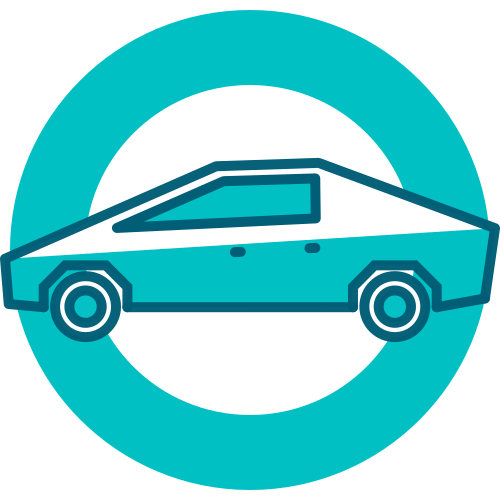

<!doctype html>
<html>
<head>
  <meta charset="UTF-8">
  <title>No More Monty Hall Confusion</title>
  <meta name="description" content="Understand the Monty Hall problem at once.">

  <meta property="og:url" content="https://game.hyeon.me/montyhall">
  <meta property="og:title" content="No More Monty Hall Confusion">
  <meta property="og:site_name" content="game.hyeon.me">
  <meta property="og:description" content="Understand the Monty Hall problem at once.">

  <meta name="twitter:site" content="@simnalamburt">
  <meta name="twitter:title" content="No More Monty Hall Confusion">
  <meta name="twitter:description" content="Understand the Monty Hall problem at once.">
  <meta name="twitter:card" content="summary_large_image">
  <meta name="twitter:creator" content="@simnalamburt">
  <meta name="twitter:url" content="https://game.hyeon.me/montyhall">
  <style>
  * {
    box-sizing; border-box;
  }

  body {
    margin: 0;
    background: #eee;
  }

  #game {
    /* --repeat-count 는 js로 정의됨 */
    --padding-size: 50px;
    --gap-size: calc(200px/var(--repeat-count));
    --game-size: calc(100vmin - 2*var(--padding-size));
    --door-size: calc(
      (var(--game-size) - (var(--repeat-count) - 1)*var(--gap-size))/var(--repeat-count)
    );

    display: grid;
    width: var(--game-size);
    height: var(--game-size);
    margin: calc(var(--padding-size)/2) auto;
    padding: calc(var(--padding-size)/2);
    background: white;
    grid: repeat(var(--repeat-count), var(--door-size)) / repeat(var(--repeat-count), var(--door-size));
    grid-gap: var(--gap-size);
  }

  #game img {
    width: var(--door-size);
    height: var(--door-size);
    object-fit: cover;
    border-radius: 15%;
  }

  #game .goat {
    background: ivory;
  }
  #game .goat > img {
    position: absolute;
  }
  #game .goat.fade > img.goat {
    animation: 0.8s cubic-bezier(.96,0,.34,.97) forwards die;
  }
  @keyframes die {
    to {
      opacity: 0.2;
      transform: scale(0.8);
    }
  }
  #game .goat.fade > img.x {
    animation: 0.8s cubic-bezier(.96,0,.34,.97) forwards fadein1;
  }
  @keyframes fadein1 {
    from {
      opacity: 0;
    }
    to {
      opacity: 0.3;
    }
  }
  #game .goat.nofade > img.x {
    animation: 0.8s cubic-bezier(.96,0,.34,.97) forwards fadein2;
  }
  @keyframes fadein2 {
    from {
      opacity: 0;
    }
    to {
      opacity: 0.8;
      transform: scale(1.5);
    }
  }

  #game img.car {
    background: yellow;
    animation-name: highlight1, highlight2;
    animation-duration: 0.21s, 0.19s;
    animation-delay: 0s, 0.21s;
    animation-timing-function: cubic-bezier(.09,.14,.52,.86), cubic-bezier(.51,-0.31,.26,1.33);
    animation-fill-mode: forwards, forwards;
  }
  @keyframes highlight1 {
    to {
      transform: scale(2.3);
    }
  }
  @keyframes highlight2 {
    from {
      transform: scale(2.3);
    }
    to {
      transform: scale(2);
    }
  }
  </style>
  <!-- Preload images -->
  <link ref=preload href=door.svg as=image importance=high>
</head>
<body>


<script type="module">
import { h, render } from 'https://unpkg.com/preact@latest?module'
import { useReducer } from 'https://unpkg.com/preact@latest/hooks/dist/hooks.module.js?module'
import htm from 'https://cdn.jsdelivr.net/npm/htm@2.2.1/dist/htm.mjs'

const e = htm.bind(h)

const size = 10
let initialState = { t: 'begin', size, car: randint(size**2) }
/*
type State =
  { t: 'begin', size: number, car: number } |
  { t: 'answer_right', size: number, car: number, bait: number } |
  { t: 'answer_wrong', size: number, car: number, wrong_answer: number } |
  { t: 'win', size: number, car: number } |
  { t: 'lose', size: number, car: number, wrong_answer: number } |
  { t: 'errored' }

type Action =
  ['first_answer', number] |
  ['second_answer', number]
*/

const reducer = (state, action) => {
  const [cmd, ...args] = action
  switch(cmd) {
    case 'first_answer':
      switch(state.t) {
        case 'begin': return (
          state.car === args[0] ?
          { ...state, t: 'answer_right', bait: randint_except(state.size**2, args[0]) } :
          { ...state, t: 'answer_wrong', wrong_answer: args[0] }
        )
        default: return { t: 'errored' }
      }
    case 'second_answer':
      switch(state.t) {
        case 'answer_right': // fallthrough
        case 'answer_wrong': return (
          state.car === args[0] ?
          { ...state, t: 'win' } :
          { ...state, t: 'lose', wrong_answer: args[0] }
        )
        default: return { t: 'errored' }
      }
  }
}

const Door = props => e`
  
`
const Goat = props => e`
  <div ...${props} class="goat ${props.nofade ? 'nofade' : 'fade'}">
    
    
  </div>
`
const Car = props => e`
  
`

const App = () => {
  const [state, dispatch] = useReducer(reducer, initialState)
  return e`
    <div id=game>
      ${repeat(state.size, row =>
        repeat(state.size, col => {
          const n = row*state.size + col

          switch (state.t) {
            case 'begin': return (
              e`<${Door} onClick=${() => dispatch(['first_answer', n])}/>`
            )
            case 'answer_right': return (
              state.car === n || state.bait === n ?
              e`<${Door} onClick=${() => dispatch(['second_answer', n])}/>` :
              e`<${Goat} onClick=${() => dispatch(['second_answer', n])} key=${n}/>`
            )
            case 'answer_wrong': return (
              state.car === n || state.wrong_answer === n ?
              e`<${Door} onClick=${() => dispatch(['second_answer', n])}/>` :
              e`<${Goat} onClick=${() => dispatch(['second_answer', n])} key=${n}/>`
            )
            case 'win': return (
              state.car === n ?
              e`<${Car}/>` :
              e`<${Goat} key=${n}/>`
            )
            case 'lose': return (
              n === state.car ? e`<${Car}/>` :
              n ===state.wrong_answer ? e`<${Goat} nofade key=${n}/>` :
              e`<${Goat} key=${n}/>`
            )
            case 'errored': return undefined
          }
        })
      )}
    </div>
    <style>
    #game {
      --repeat-count: ${state.size};
    }
    </style>
  `
}

render(e`<${App}/>`, document.body)

// Utility function which is equivalent to `[0, 1, ..., count-1].map(func)`
function repeat(count, func) {
  return Array.from({ length: count }, (_, i) => func(i))
}

// Return a random integer in [0, n)
function randint(n) {
  return (Math.random() * n)|0
}

// Return a random integer in [0, except) ∩ (except, n)
function randint_except(n, except) {
  const ret = (Math.random() * (n - 1))|0
  return ret >= except ? ret + 1 : ret
}

// Manually preload images
new Image().src = 'door.svg'
new Image().src = 'goat.svg'
new Image().src = 'x.svg'
new Image().src = 'car.svg'
</script>


</body>
</html>
